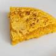

La tortilla de patatas es uno de los platos más conocidos de la gastronomía española.
Según Wikipedia, es una receta tradicional muy popular en España.
Una pequeña colección de recetas fáciles para cocinar en casa.
Una receta es un conjunto de instrucciones para preparar un plato. Muchas recetas tradicionales usan ingredientes simples pero técnicas cuidadosas.
Cocinar en casa es saludable y también puede ser muy divertido.

La tortilla de patatas es uno de los platos más conocidos de la gastronomía española.
Según Wikipedia, es una receta tradicional muy popular en España.